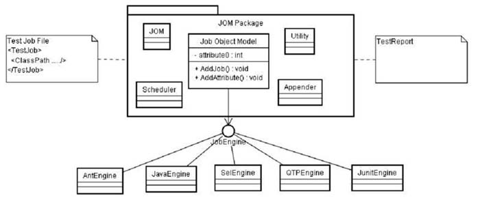
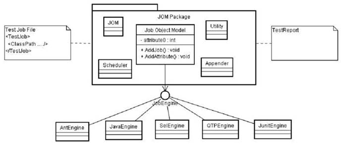

ACFramework的程序架构 AC通过调度不同的Test JobEngine来完成不同类型的测试任务。架构设计采用多种java设计模式，扩展性极强。目前支持Ant，QTP，Java，Selenium，Junit等。可以根据客户需求进行扩展定制。 AC框架结构如下： 
AC通过调度不同的Test JobEngine来完成不同类型的测试任务。架构设计采用多种java设计模式，扩展性极强。目前支持Ant，QTP，Java，Selenium，Junit等。可以根据客户需求进行扩展定制。
AC框架结构如下：
